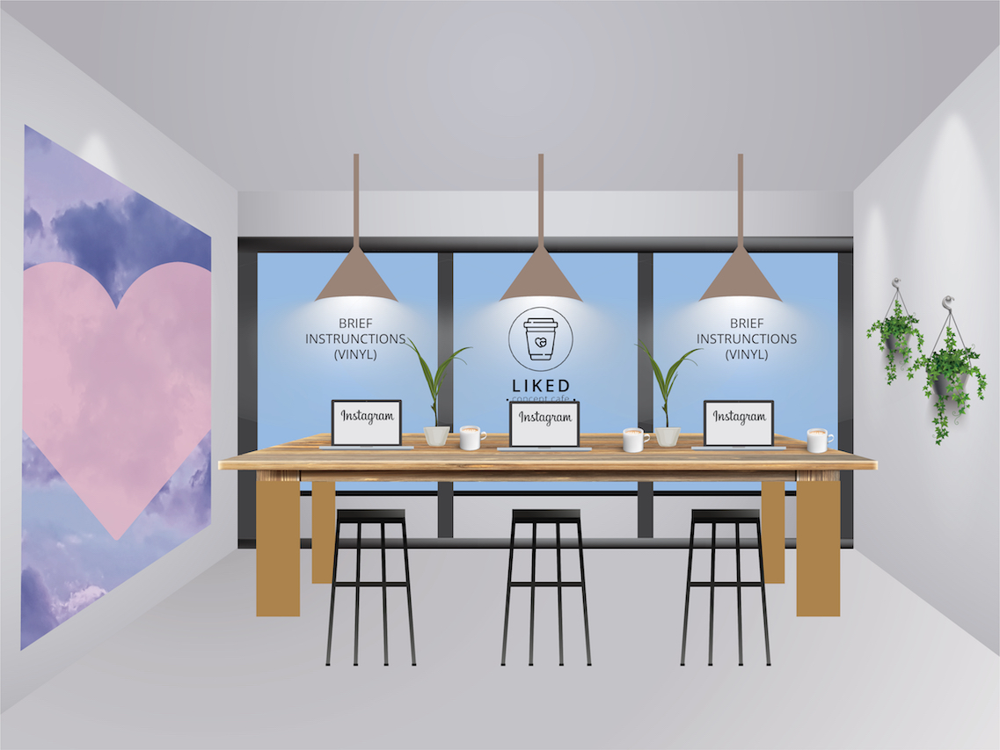
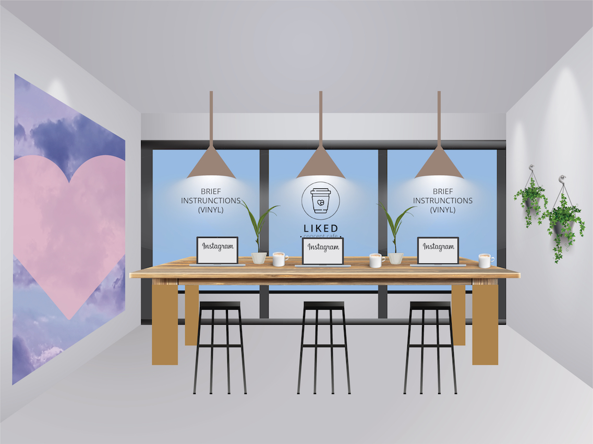

WEEK 9
This week I continued working on updating this archive/documentation site. I want to transfer the weekly blog posts I have been doing in the official Capstone class blog to this site to have a full archive of my project. Although I already have most of the content, it is still a lengthy process to edit the text and align all the images and videos on the site. So far, I have fully transferred Week 7 to the website and my goal is to transfer the rest of the weeks by next Tuesday. In addition to working on the archive, I also updated my Capstone budget to meet the new needs of the online presentation format. I will send this budget to Aaron for approval to finish working on the exhibition layout renders with more professional stock vectors.
Lastly, I also created a Google Developer account to hopefully publish my extension on the Extension Store and familiaried myself with the tutorial on how to do it. I still have couple of tweaks that I want to do with the extension but once they are done, I will try publishing the extension to make it more easily accessible. I have also started working on the paper to finish a draft in the upcoming week and a half.

WEEK 8
During the break I continued polishing the design elements such as the logo, the brochure and the Instagram background wall. The goal was to make them more unified because thus far the line art of the logo was not entirely consistent with the softer pink textures inside the brochure. Therefore, I incorporated the pink squiggly hearts within the logo and made the inside of the brochure use more of the line graphic style from the logo. At this point I am mostly done with the design elements and can concentrate on the rest of the tasks. I also updated this archive/documentation website to be in line with the new design. Now that it is up and working, I will be posting the weekly updates here as well as start the documentation of my project.


Regarding the direction the project will take after the announcement about not being able to do a physical exhibition, I have decided to fully move my project online. After consulting with my advisor we pinpointed two main reasons for this decision. Firstly, the extension itself is already online and can exist fully in an online medium without any additional changes. Secondly, it is not possible anymore to fabricate the assets needed for a physical exhibition. Without assets such as the countertop, the walls and even a real window it seemed like the essence of the interior design was lost. Besides, as there would be no people able to attend the temporary mounted exhibition in the Capstone studio at NYUAD, it also would not be possible to get physical participation in the space which was essential for such activities as taking photos of the Instagram wall or putting heart stickers on objects in the space.
However, I am still very much attached to the idea of the Instagram café and the design that I had planned. As I already had most of the design elements finished prior to the announcement about the exhibition, I would still like to use them, just in a different form. The solution that I came up with is creating some high quality 2D renders of what the exhibition space was supposed to look like and create a detailed guide of the space within the documentation section of this website. The documentation would include all the digital assets and renders of the space with a purpose to be able to recreate such a space at a time when making physical exhibitions is possible again. Therefore, it was important to work on this website over the break as it will become the main place where my Capstone project will live.
WEEK 7
In the past week I first met up with the Capstone Seminar advisor Aaron, and he helped me to figure out how to limit the output of the extension to just one action per image instead of everything (posting a comment, erasing likes and appending text) happening at once. We also altered the window.scroll() function in the code to only look for scrolling when it occurs and not all the time, which significantly improved the functionality of the extension. I then showed my extension to a couple more people and gathered their feedback to have a clearer idea of how to improve my project. Based on my users’ feedback I worked with randomizing the output of the extension in order to not have something happening every time that a photo is liked. My users also recommended to increase the chance of a comment being posted, as they said it seemed the most realistic and unsettling output. Therefore, I worked with the code to try to control the randomness so that posting a comment happens the most often. Appending text on the image happens the least frequently, as it is the most apparent action and causes the user to really slow down and think about what happened previously and what will happen when liking the upcoming images. This is a demo of my extension which I also showed in the Midterm presentation to the Interactive Media faculty at NYUAD:
Besides from working on the extension, I also kept working on the visual materials for the display purposes of my project. I communicated with NYUAD's design instructor Erin and received more feedback on the visual elements and updated them based on the feedback. The idea was to move away from an Instagram-specific aesthetic (therefore I removed the Instagram-inspired gradient from my graphics) and adapt to a more universal aesthetic that could apply to social media in general. Thus, I updated the brochure/menu, the Instagram background wall for the cafe, created a logo and the design for sticker sets. I also created a mock-up plan of the frontal view of the imagined exhibition space.

 
